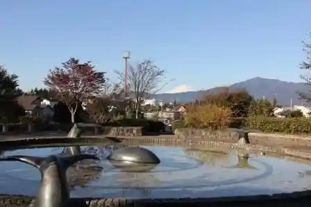
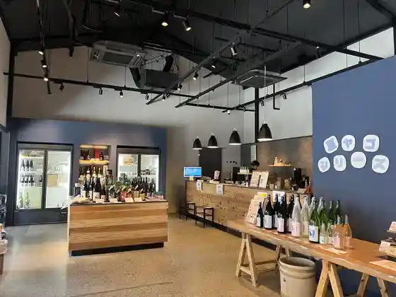
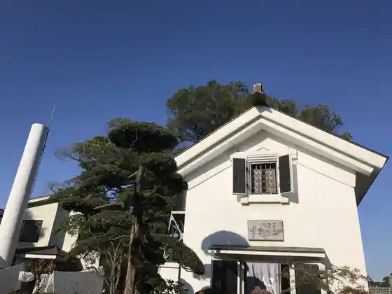
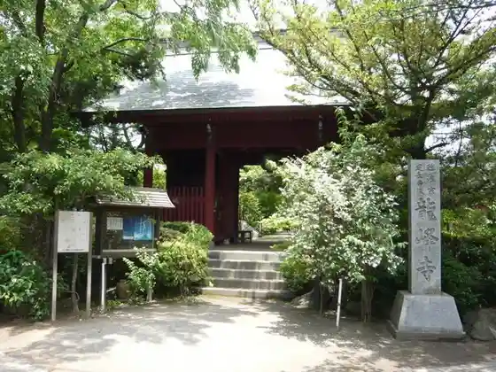

Ebina Service Area (Ebina SA)
Ebina, Kanagawa · 046-231-7767 · Official / source link
Otani Kinrin Park
Ebina, Kanagawa · 046-235-8439 · Official / source link

Senkyo Shuzo Shuzo SHOP (Shuyu Kan)
Ebina, Kanagawa · 046-240-0417 · Official / source link

Senkyo Shuzo
Ebina, Kanagawa · 046-231-1338 · Official / source link

Ryu Mine Tera (Mokuzo Senjukannon Ritsuzo)
Ebina, Kanagawa · Official / source link

Prefectural Sagami Mikawa Park
Ebina, Kanagawa · 046-236-5008 · Official / source link
Akiba Yama Kofun Gun
Ebina, Kanagawa · 046-235-4925 · Official / source link
Ebina Onko Kan
Ebina, Kanagawa · Official / source link
Sagami Kokubunji Dosho
Ebina, Kanagawa · 046-232-8212 · Official / source link
Binauoku
Ebina, Kanagawa · 046-236-3709 · Official / source link
Imafuku Yakui Mon Park
Ebina, Kanagawa · 046-235-4925 · Official / source link
Ebina no Okeyaki
Ebina, Kanagawa · 046-235-4925 · Official / source link
Yukijirushi Megumiruku Ebina Kojo
Ebina, Kanagawa · 046-240-6300 · Official / source link
Romansuka Museum
Ebina, Kanagawa · 046-233-0909 · Official / source link
Ebina Sports Park
Ebina, Kanagawa · 046-235-7204 · Official / source link
Hokubu Park
Ebina, Kanagawa · 046-292-3300 · Official / source link
Nakano Park
Ebina, Kanagawa · 046-244-0085 · Official / source link
Ueinzu Park Ebina
Ebina, Kanagawa · Official / source link
Rakuga Kizzu Ebina Binauoku Mise
Ebina, Kanagawa · 046-244-4420 · Official / source link
BOOTVERSE Ebina Binauoku Mise
Ebina, Kanagawa · 046-244-4420 · Official / source link
Fantajiikizzu Resort Ebina Mise
Ebina, Kanagawa · 046-400-7788 · Official / source link